Thao tác cơ bản với tệp tin và thư mục
Hướng dẫn thực hành 12 bước cơ bản trên Windows: tạo thư mục, tạo tệp tin, đổi tên, sao chép, di chuyển và xóa dữ liệu.
-
1. Mở File Explorer
Nhấn tổ hợp phím Windows + E hoặc nhấp vào biểu tượng thư mục trên thanh tác vụ.
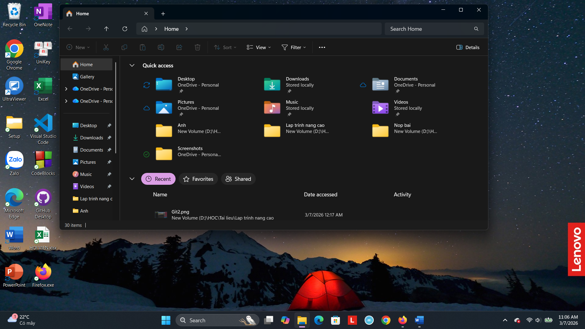
-
2. Truy cập ổ đĩa/thư mục
Ở cột bên trái, chọn This PC rồi nhấp đúp vào ổ đĩa không phải hệ thống, ví dụ D:\ hoặc E:. Nếu chỉ có C:, vào thư mục Documents.
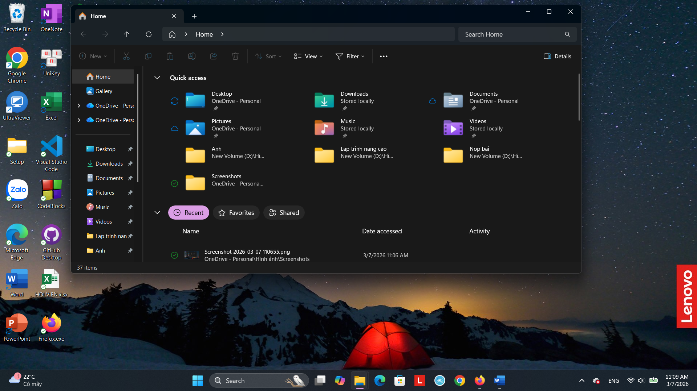
-
3. Tạo thư mục mới
Nhấp chuột phải vào khoảng trống, chọn New > Folder. Đặt tên là ThucHanh_hotenSinhVien (ví dụ: ThucHanh_NguyenVanA), sau đó nhấn Enter.
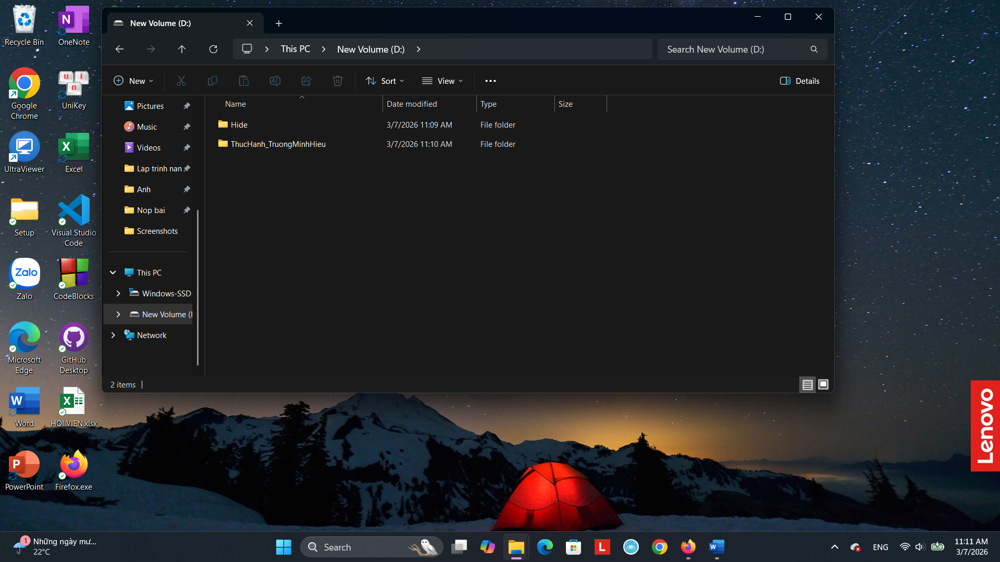
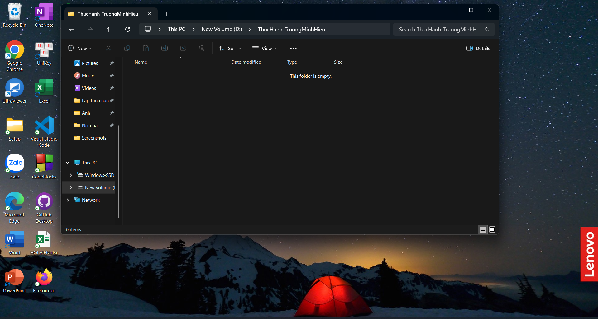
-
4. Vào thư mục vừa tạo
Nhấp đúp vào thư mục ThucHanh_NguyenVanA để mở.
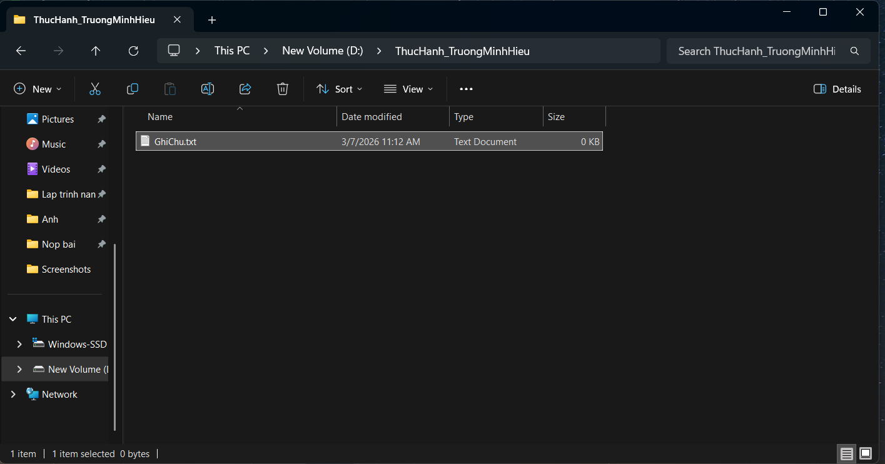
-
5. Tạo tệp tin văn bản
Nhấp chuột phải vào khoảng trống, chọn New > Text Document. Đặt tên là GhiChu.txt rồi nhấn Enter.
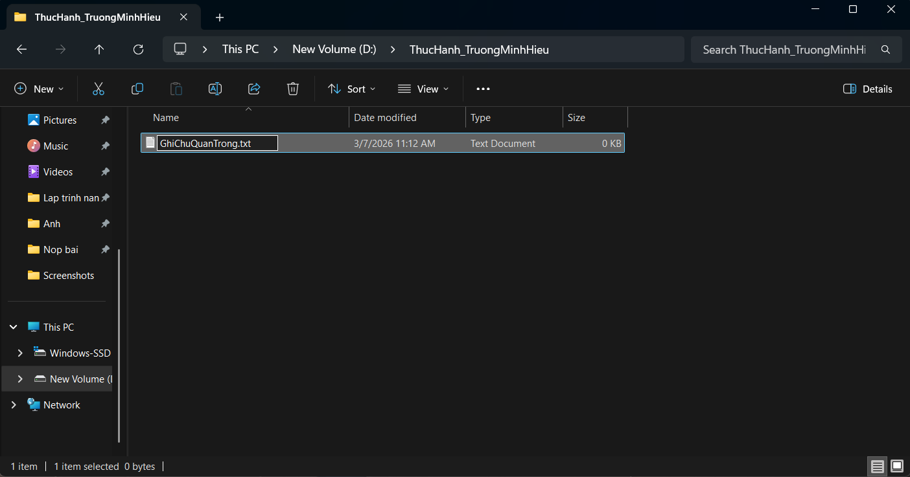
-
6. Đổi tên tệp tin
Nhấp chuột phải vào GhiChu.txt, chọn Rename và đổi tên thành GhiChuQuanTrong.txt. Nhấn Enter để xác nhận.
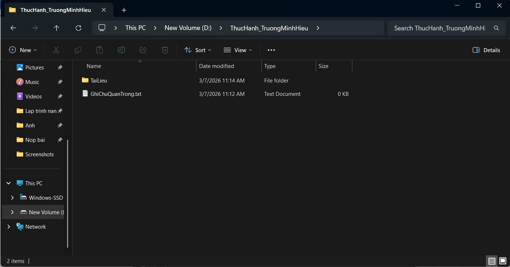
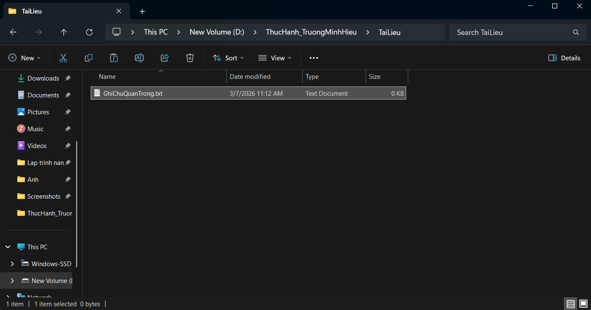
-
7. Tạo thư mục con
Trong thư mục ThucHanh_NguyenVanA, nhấp chuột phải, chọn New > Folder và đặt tên là TaiLieu.
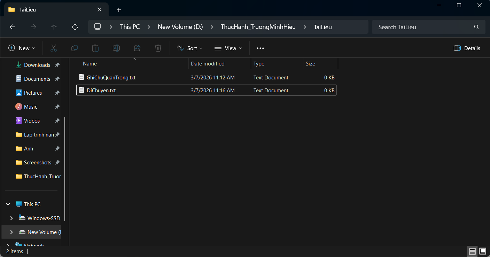
-
8. Sao chép tệp tin
Nhấp chuột phải vào GhiChuQuanTrong.txt, chọn Copy (hoặc Ctrl + C). Mở thư mục TaiLieu, nhấp chuột phải chọn Paste (hoặc Ctrl + V).
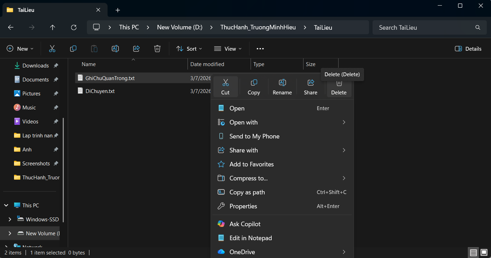
-
9. Di chuyển tệp tin
Trở lại thư mục ThucHanh_NguyenVanA, tạo tệp DiChuyen.txt, chọn Cut (Ctrl + X), rồi dán vào thư mục TaiLieu.
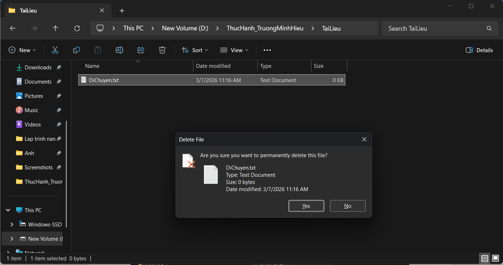
-
10. Xóa tệp tin
Trong TaiLieu, nhấp chuột phải vào GhiChuQuanTrong.txt, chọn Delete. Tệp sẽ được chuyển vào thùng rác Recycle Bin.
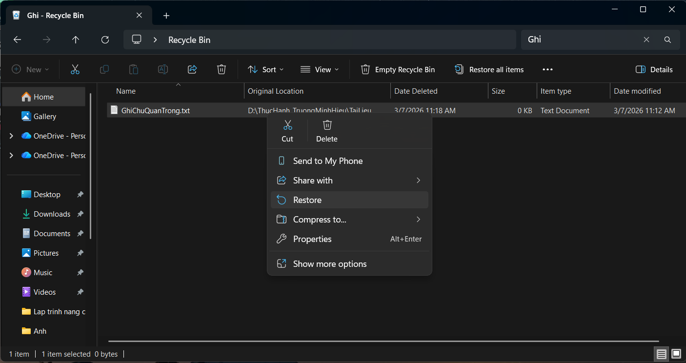